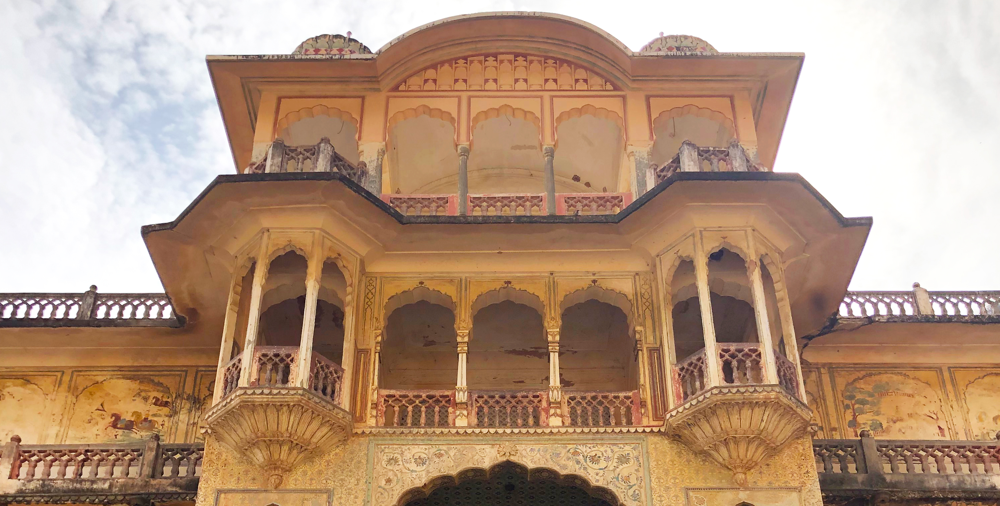
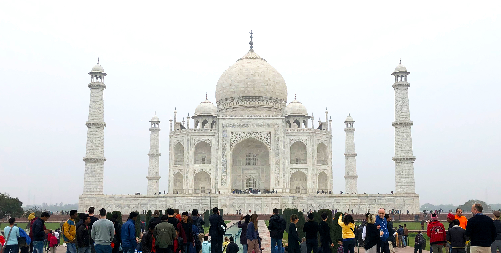

New Delhi
Steeped in history yet overflowing with modern life, colourful, cacophonous Delhi pulsates with the relentless rhythms of humanity like few other cities on Earth.
More to explore in New Delhi!

Jaipur
Enthralling, historical Jaipur, Rajasthan’s capital, is the gateway to India’s most flamboyant state.
More to explore in Jaipur!

Agra
The magical allure of the Taj Mahal draws tourists to Agra like moths to a wondrous flame. And despite the hype, it’s every bit as good as you’ve heard. But the Taj is not a stand-alone attraction. The legacy of the Mughal empire has left a magnificent fort and a liberal sprinkling of fascinating tombs and mausoleums, and there’s also fun to be had in the bustling chowks (marketplaces).